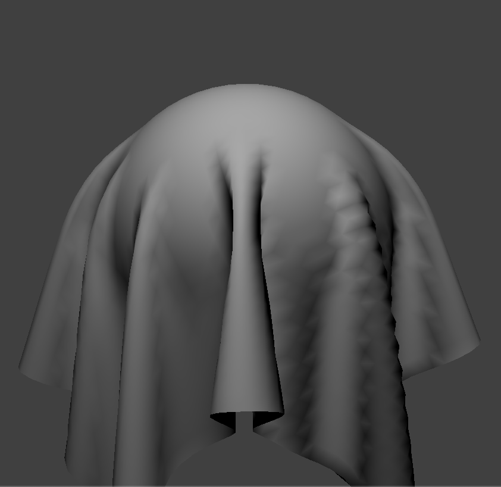

CS184 Project 4 - Max Lord and Eugenia Gavrilova
Overview
1. An overview of the project, your approach to and implementation for each of the parts, and what problems you encountered and how you solved them.
In part 1, we set up the point masses and springs that created a wireframe for our cloth as well as defined the different spring constraints.
In part 2, we set up the physics of the wireframe by considering forces on point masses and spring constraints.
In part 3, we started to consider collisions between the cloth and other objects, including both a plane and a sphere, then extended this in part 4 by allowing the cloth to collide with itself and processing that correctly.
Finally, in part 5, we applied shaders to the cloth so we could control its lighting, texture, and material effects during the simulation.
Most problems we encountered were due to issues with either processing information or formulas in the wrong order,
failing to normalize vectors, or using the incorrect variables for certain values in a given formula, all of which we fixed by carefully reviewing lecture material as well as Piazza.
Part 1
1. Take some screenshots of scene/pinned2.json from a viewing angle where you can clearly see the cloth wireframe to show the structure of your point masses and springs.
2. Show us what the wireframe looks like (1) without any shearing constraints, (2) with only shearing constraints,
and (3) with all constraints.
Part 2
1. Experiment with some the parameters in the simulation. To do so, pause the simulation at the start with P, modify the values of interest, and then resume by pressing P again.
You can also restart the simulation at any time from the cloth's starting position by pressing R.
Describe the effects of changing the spring constant ks; how does the cloth behave from start to rest with a very low ks? A high ks?
What about for density? What about for damping? For each of the above, observe any noticeable differences
in the cloth compared to the default parameters and show us some screenshots of those interesting differences and describe when they occur.
With a high spring constant, the cloth between the pinned corners stays tight and doesn't sag much between them, but a low string constant
causes the midpoint between the pinned points to sag well below the plane of the pinned points.
On the left is the cloth with a high spring constant and on the right is the cloth with a low spring constant.
With a low density, the cloth between the pinned corners stays fairly tight and doesn't sag much between them, but a high density
causes the midpoint between the pinned points to sag well below the plane of the pinned points.
On the left is the cloth with a high density and on the right is the cloth with a low density.
With low damping, the cloth swings well past its resting point before swinging back and forth to an equilibrium. With high damping,
the cloth slowly falls to its equilibrium point and barely swings past the equilibrium, if at all. On the left is the cloth with high damping and on the right is the cloth with low damping as it swings past equilibrium.
2. Show us a screenshot of your shaded cloth from scene/pinned4.json in its final resting state! If you choose to use different parameters than the default ones, please list them.
Part 3
1. Show us screenshots of your shaded cloth from scene/sphere.json in its final resting state on the sphere using the default ks = 5000 as well as with ks = 500 and ks = 50000.
Describe the differences in the results.
(500, 5000, 50k)
With a higher spring constant value, the cloth becomes stiffer and thus its final resting state is a looser wrap around the sphere, as opposed to a low ks value, where the cloth wraps the sphere more tightly.
2. Show us a screenshot of your shaded cloth lying peacefully at rest on the plane. If you haven't by now, feel free to express your colorful creativity with the cloth! (You will need to complete the shaders portion first to show custom colors.)
Part 4
1. Show us at least 3 screenshots that document how your cloth falls and folds on itself, starting with an early, initial self-collision and ending with the cloth at a more restful state (even if it is still slightly bouncy on the ground).
2. Vary the density as well as ks and describe with words and screenshots how they affect the behavior of the cloth as it falls on itself.
When holding the other variable value constant, a lower density and higher spring constant value both correspond to less self-collisions
and thus what appears to be less folds in on itself. On the other hand, a higher density and lower spring constant
value correspond to more self-collisions on the surface of the cloth and consequently tighter, more frequent folds in on itself.
Part 5
1. Explain in your own words what is a shader program and how vertex and fragment shaders work together to create lighting and material effects.
Shaders take in a single pixel or fragment and do some operation on it to determine what the color of the surface
at that pixel or fragment should be based on a combination of lighting, base color, and material effects.
That operation can also include a lookup of some preset texture that is mapped onto the pixel/fragment.
Vertex shaders focus on modifying the geometry of the material and set up final values for vertex positions, normals, and tangents for use in fragment shaders.
Fragment shaders take in the geometry determined by vertex shaders and use them in lighting/material effect formulas to determine and output the actual color at that fragment.
2. Explain the Blinn-Phong shading model in your own words. Show a screenshot of your Blinn-Phong shader outputting only the ambient component,
a screen shot only outputting the diffuse component, a screen shot only outputting the specular component, and one using the entire Blinn-Phong model.
The concept of Blinn-Phong shading is to add multiple forms of shading (ambient, diffuse, and specular) and combine them together to achieve a more realistic shading model.
The specular component is new at this stage, compared to diffuse and ambient lighting which have featured in previously discussed shading/lighting models. Specular works by
brightening the area near the area where a mirror reflects light, which gives the material a more photorealistic appearance because some materials have a harsh shine/reflection when directly hit by light.
(Ambient, Diffuse, Specular, Full)

3. Show a screenshot of your texture mapping shader using your own custom texture by modifying the textures in /textures/.
4. Show a screenshot of bump mapping on the cloth and on the sphere. Show a screenshot of displacement mapping on the sphere.
Use the same texture for both renders. You can either provide your own texture or use one of the ones in the textures directory,
BUT choose one that's not the default texture_2.png. Compare the two approaches and resulting renders in your own words.
Compare how your the two shaders react to the sphere by changing the sphere mesh's coarseness by using -o 16 -a 16 and then -o 128 -a 128.
Between bump and displacement mapping, we can see that the "folds" that occur in bump mapping as well as illusions of texture changes become
actual displacements in vertex position in displacement mapping. Displacement mapping considers the texture as a function on position, not just appearance.
Regarding the coarseness change, the mapping for 16 shows fairly smooth folds in both bump and displacement,
but with 128 the folds become more aggressive and much sharper changes in position, so there are fewer flat areas.
(Bump 16, Displacement 16, Bump 128, Displacement 128)

5. Show a screenshot of your mirror shader on the cloth and on the sphere.


Website Link
https://cal-cs184-student.github.io/sp22-project-webpages-maxqlord/proj4/index.html